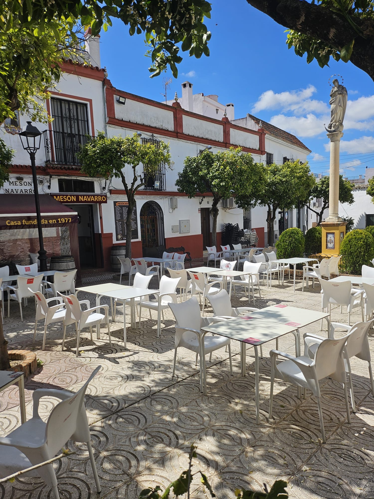
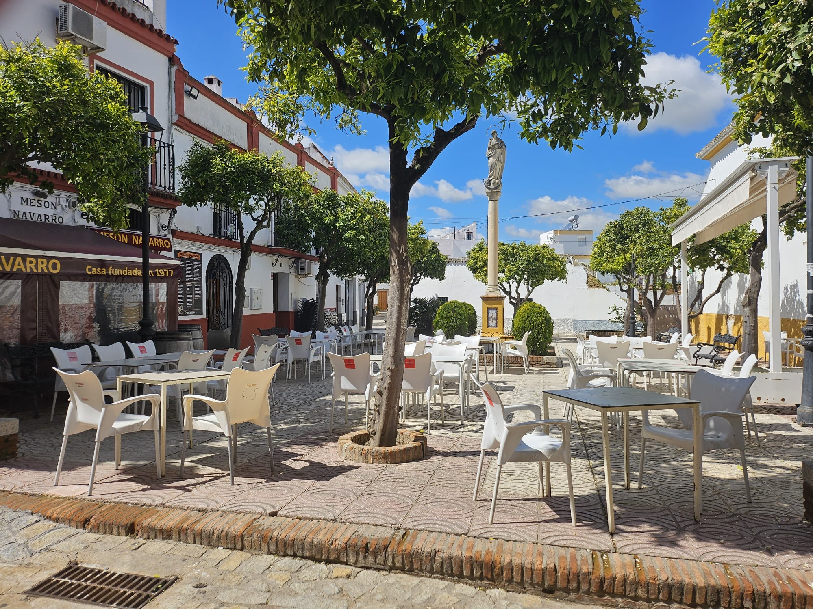

Una historia que empieza en 1977
En el corazón de Valencina de la Concepción, Mesón Navarro abrió sus puertas en 1977 como un pequeño negocio familiar. Desde entonces, tres generaciones han mantenido viva la tradición de la cocina casera sevillana.
Hoy, con más de 1.600 reseñas y 4.6 estrellas, seguimos apostando por los productos frescos de la tierra, las recetas de siempre y un trato cercano que convierte cada visita en una experiencia en familia.
Nuestro comedor, con su chimenea original, nuestra terraza y el salón privado, ofrecen el marco perfecto para cualquier ocasión.

Casa fundada en 1977

Tradición familiar

Ambiente acogedor